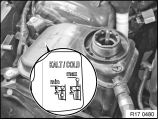
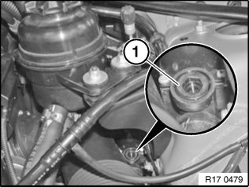
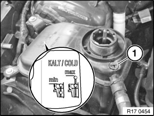
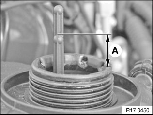

17 00 039 Venting Cooling System and Checking For Water Leaks
17 00 039 Venting cooling system and checking for water leaks (N52/ N52K/ N51/ N53)Warning!
Danger of scalding!
Open sealing cap only after engine has cooled down.
Important!
Electric coolant pump!
Follow instructions for working on cooling system.
Important!
Lifetime coolant filling:
Never reuse used coolant!
When replacing and removing components which rely on the corrosion protection effect of the coolant, it is essential to change the coolant. The cooling system must therefore be drained and refilled.
In the case of other removal work involving the draining of partial quantities of coolant, replace these quantities which have been drained with new coolant.

Only when refilling!
Use only recommended coolant.
Observe mixture ratio.
Perform filling operation slowly.
Adjust coolant level to MAX.

Close coolant expansion tank.
Installation:
Close cap (1) until the arrow marks line up.
Important!
The following venting procedure is necessary e.g. when a part is replaced in the cooling system or when the cooling system is refilled.

Vehicles with independent heating only:
Open vent screw (1).
Tightening torque 17 00 4AZ.
Slowly fill coolant expansion tank with recommended coolant.
Close vent screw (1) after coolant emerges.
Installation:
Have a cleaning cloth ready and mop up emerging coolant.

Adding coolant:
Open vent screw (1).
Slowly fill coolant expansion tank up to lower edge of filler neck with recommended coolant.
Observe mixture ratio.
Close vent screw (1) until bubble-free coolant emerges.
Have a cleaning cloth ready and mop up emerging coolant.
Close cap on expansion tank.
Venting cooling system:
Note:
Do not open the coolant expansion tank cap during the venting procedure.
1. Connect battery charger.
2. Switch on ignition.
3. Set heater to maximum temperature and turn fan down to lowest speed.
4. Press accelerator pedal for 10 seconds to floor. Engine must not be started.
5. The venting procedure is started when the accelerator pedal is pressed and takes approx. 12 minutes. (Electric coolant pump was activated and shuts down automatically after approx. 12 minutes).
6. Then top up fill level in coolant expansion tank with 100 ml above max. (see Fig. R17 0450).
7. Check cooling system for leaks.
8. If venting has to be carried out again (e.g. if cooling system is leaking), allow DME to fall completely (leave ignition key removed for approx. 3 minutes), then repeat from Point 3.
Only when venting!
Perform filling operation slowly.
Fill coolant expansion tank with 100 ml above max.
100 ml corresponds to A=6 mm.


Close coolant expansion tank.
Installation:
Close cap (1) until the arrow marks line up.